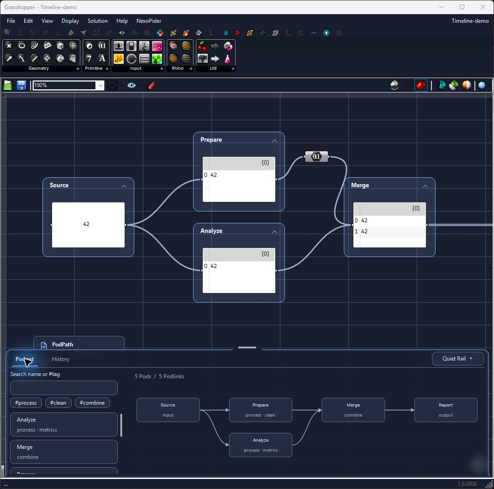
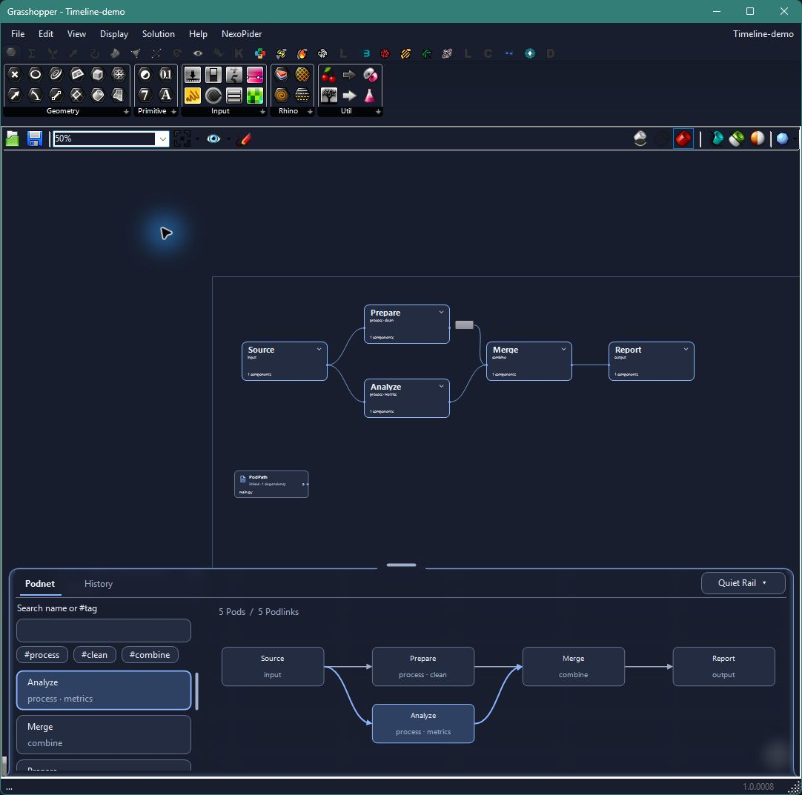
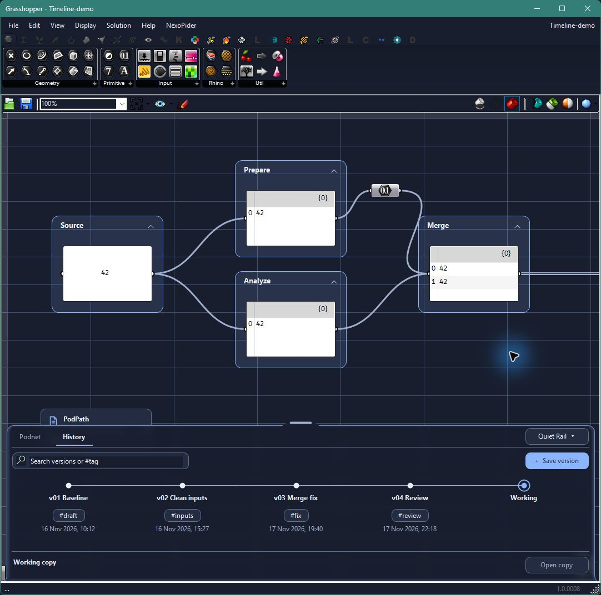

PodPath
Keep an input file linked, or internalize a supported standalone file in the definition. Register selected dependency files and folders for packaging.
NexoNest / Grasshopper workflow
Large Grasshopper definitions should stay readable. NexoPider brings named Pods, a connected Podnet map, tagged version history and portable Podbox packages to your Grasshopper workspace.
How do you keep a large Grasshopper definition understandable as its components, versions and external files multiply?
Give each part a name, keep its connections visible, and carry the selected project files and saved versions together. Work on the same canvas.

Select components, then create a Pod from the context menu. Give it a name and tags. Add or remove selected members as the definition evolves.
Find a name or tag, follow the links between Pods, and double-click a Pod to focus it on the canvas while keeping the map open.
Zoom out for compact Pods. Zoom in to see and edit the components on the same Grasshopper canvas.
Save a version with a name and tags. Browse History and open a saved version as a copy.

Keep an input file linked, or internalize a supported standalone file in the definition. Register selected dependency files and folders for packaging.
Make one ZIP containing the current Grasshopper definition, saved history and registered dependencies. Send the package instead of collecting these files separately.
Include a script file together with the dependency files and folders you select. Save changes in your external editor before packaging.

Package the project to carry its definition, saved history and selected dependencies in one ZIP. A folder registered as a dependency is copied with its contents; dependencies are not automatically discovered from script imports.
Internalize is for a supported standalone input file, up to 32 MiB. Selected dependency folders travel in Podbox rather than being embedded inside the Grasshopper definition.
Recipients need NexoPider to use its custom components and history, plus any other plugins required by the definition. A plain .gh alone does not carry the complete external project history.